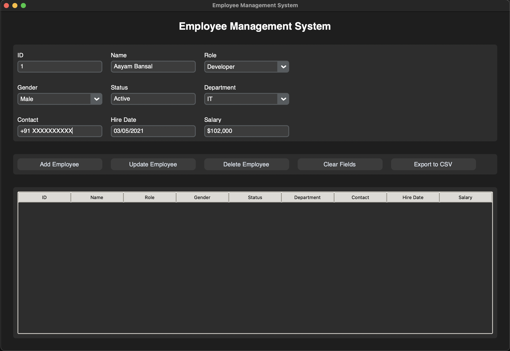

About Me
I'm a high school senior at Delhi Public School, Ruby Park, with a passion for computer science and mathematics. As I prepare for the next chapter of my academic journey, I'm excited to pursue a major in Computer Science with a minor in Mathematics.
Academic Achievements
- SAT: 1560
- IELTS: 8 band
- AP Scores: Calculus BC (5), Physics C: Mechanics (4), Computer Science A (4), Computer Science Principles (4)
- Grade Performance: 9th - 95% (3rd in batch), 10th - 96% (2nd in batch), 11th - 96.4% (highest in batch)
Research and Experience
- Research Team Leader - Future Innovative Research Program, NUS (June 2023 - Present)
Leading a team of four on 'Efficient Route AI' under NUS professor. Using satellite data for road safety, developing a 4,000-word paper to be published in the NUS journal.
- AI Projects Team Leader - AI Internship for Young Achievers, NUS and Amazon (January 2023 - May 2023)
Led two diverse teams: AI Model for 'Telecom Churn Prediction' ranked top 3, AWS Chatbot on gun safety won the most innovative chatbot award.
- Research Project - Harvard Student Agency Research Program (September 2022 - December 2022)
Authored a 4,000-word paper on AI in Edge Computing, exploring low-latency processing models, published on the HSA website.
- AI Internship - Jadavpur University (May 2022 - April 2023)
Collaborated with PhD students on AI/ML projects for glaucoma & diabetes detection in retinal images, enhancing research quality & deepening learning.
- Maths Club Instructor - Delhi Public School, Ruby Park (August 2019 - Present)
Taught middle schoolers/freshmen/sophomores math basics, led calculus classes, organized math contests, highest honor, active in Stanford Math Club.
Programming and AI Projects
Employee Management System
Technologies used: Python, SQLite, Tkinter
Developed a comprehensive Employee Management System using Python, SQLite, and Tkinter. This project demonstrates proficiency in database management, GUI development, and creating practical business applications.
The system features a dark-themed interface for comfortable use in various lighting conditions. It includes fields for comprehensive employee information and provides functionality for adding, updating, and deleting employee records, as well as exporting data to CSV.
View on GitHubAI Image Prediction Model
Technologies used: MobileNetV2, Python, Computer Vision
Developed an advanced image identification model using MobileNetV2, capable of accurately classifying a wide range of images. This project demonstrates skills in deep learning and computer vision.

The image shows a sample prediction of an Egyptian cat with a confidence level of 0.69.
View on GitHubASK Introspection - Mental Health App
Technologies used: Swift, iOS Development, UI/UX Design
Developed a comprehensive mental health app called "ASK Introspection" to serve as a daily companion for mental wellness. This project demonstrates skills in mobile app development, user interface design, and creating solutions for important social issues.
The app features a clean, intuitive interface with a soothing color scheme to promote a sense of calm and well-being. It offers personalized insights based on user inputs and provides actionable recommendations to improve mental health.
View on GitHubThe Wellness Clinic App
Technologies used: Swift, iOS Development, UI/UX Design, Healthcare Integration
Developed a comprehensive mobile application for The Wellness Clinic, streamlining patient services and clinic management. This project demonstrates skills in creating practical solutions for healthcare providers and patients.
The app features a clean, professional design with a blue and white color scheme, reflecting the clinic's branding. It offers an intuitive booking process, easy access to various health services, and a streamlined view of booked appointments for efficient clinic management.
View on GitHubProjects and Activities
- App Developer (January 2023 - April 2023)
Developed and published two apps: one for a Wellness Clinic, another for mental health; utilized UCSD Swift course and YouTube tutorials for coding.
- Volunteer & Research Intern - Kolkata Municipal Corporation (KMC) (June 2019 - Present)
Conducted surveys in slums for the Old Age Pension scheme, focused on accurate data collection, community engagement with elderly, & field challenges.
- Volunteer & Research Intern - New Town Kolkata Development Authority (NKDA) (July 2020 - May 2022)
Led Dengue awareness campaigns, identified mosquito breeding sites, engaged locals in prevention, conducted field surveys, & distributed resources.
- Tech Club Member - Delhi Public School, Ruby Park (August 2021 - Present)
Led Python/Java workshops, organized hackathons, collaborated on AI/ML projects in the exclusive Tech Club, mentoring peers and innovating solutions.
- Chess Club Competitor (August 2020 - Present)
2nd in Don Bosco Bandel, 2nd in Silver Jubilee, 6th in All Bengal Open, Distinction award, taught basic chess concepts to juniors, 1650 online rating. 17th Nationally in 13th Edition Chess for Youth-2023 (Under-16).
Upcoming Olympiads and Competitions
- NJCS (National Junior Cyber Security Olympiad) - September 15, 2024
- Pi Quiz Seniors (IIM Indore) - September 17-19 & October 3-5, 2024
- ASMO (Asian Science and Math Olympiad) - September 28-29, 2024
- FMO (Fermat Math Olympiad) - October 19-20, 2024
- AMO (American Math Olympiad) - October 27, 2024
- IMO and IEO (Indian Math and English Olympiad) - October/November 2024
- TIMO (Thailand International Math Olympiad) - December 8-9, 2024
- Asian-Rope (Math Olympiad) - January 19, 2025
- FISO (Future Intelligence Students Olympiad IT) - January 28-29, 2025
Skills and Interests
Honors and Awards
- Computer Science Award of Excellence
- AP Scholar with Honor
- SASMO 2024: Bronze Medal, State and Country Rank 1
- Aryabhatta National Math Competition 2024: Gold Medal
- IMOCSEA 2024: International Silver Medal, National Rank 2
- SOF National Cyber Olympiad: Zonal Rank 23, International Rank 214
- NASTA 2019: 11th State Rank, 270th National Rank
- Scholar Badge: Awarded for 3 consecutive years